Lokesh Mano • 14-Apr-2022
1 Faceting
1.1 With wrap
We can create subplots using the faceting functionality.
ggplot(data=iris,mapping=aes(x=Petal.Length,y=Petal.Width))+
geom_point(aes(color=Sepal.Width))+
geom_smooth(method="lm") +
facet_wrap(~Species)plot
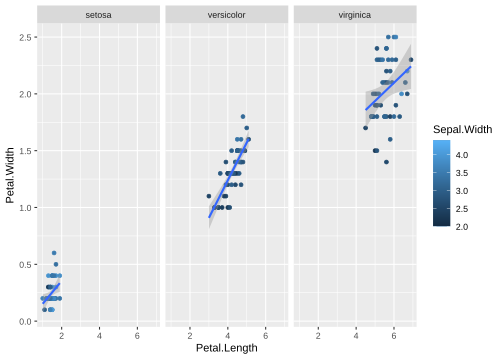
If we try the same with the gene counts data faceted by time.
ggplot(data = gc_long) +
geom_boxplot(mapping = aes(x = Sample_Name, y = log10(count + 1), color = Time)) +
facet_wrap(~Time)plot

1.2 With grid
Here in the above plot, you see some empty samples in each facet. In this case, you could use facet_grid together with space and scales options to make it look neat and intuitive. You can use ?facet_grid and ?facet_wrap to figure out the exact difference between the two.
ggplot(data = gc_long) +
geom_boxplot(mapping = aes(x = Sample_Name, y = log10(count + 1), color = Time)) +
facet_grid(~Time , scales = "free", space = "free")plot

You can also make grid with different variables one might have using vars() function together with rows and cols options!
ggplot(data = gc_long) +
geom_boxplot(mapping = aes(x = Sample_Name, y = log10(count + 1), color = Time)) +
facet_grid(rows = vars(Time), cols = vars(Replicate), scales = "free", space = "free")plot

2 Labeling and annotations
2.1 Labels
Here, we will quickly mention, how one can add labels to the plots. Items on the plot can be labelled using the geom_text or geom_label geoms.
ggplot(data=iris,mapping=aes(x=Petal.Length,y=Petal.Width))+
geom_point(aes(color=Species))+
geom_text(aes(label=Species,hjust=0),nudge_x=0.5,size=3)plot
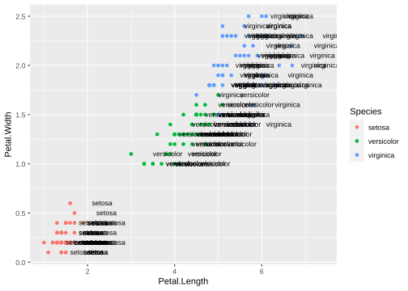
ggplot(data=iris,mapping=aes(x=Petal.Length,y=Petal.Width))+
geom_point(aes(color=Species))+
geom_label(aes(label=Species,hjust=0),nudge_x=0.5,size=3)plot
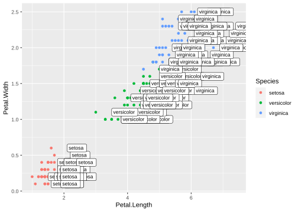
The R package ggrepel allows for non-overlapping labels.
library(ggrepel)
ggplot(data=iris,mapping=aes(x=Petal.Length,y=Petal.Width))+
geom_point(aes(color=Species))+
geom_text_repel(aes(label=Species),size=3)plot
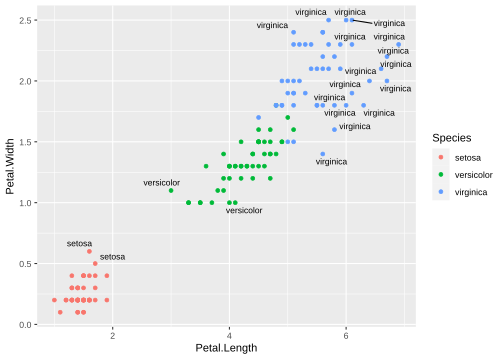
2.2 Annotations
Custom annotations of any geom can be added arbitrarily anywhere on the plot.
ggplot(data=iris,mapping=aes(x=Petal.Length,y=Petal.Width))+
geom_point(aes(color=Species))+
annotate("text",x=2.5,y=2.1,label="There is a random line here")+
annotate("segment",x=2,xend=4,y=1.5,yend=2)plot
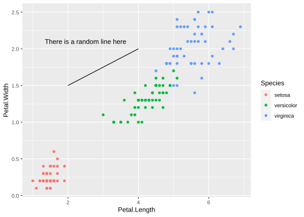
3 Bar charts
Let’s now make some bar charts with the data we have. We can start with the simple iris data first.
ggplot(data=iris,mapping=aes(x=Species,y=Petal.Width))+
geom_col()plot
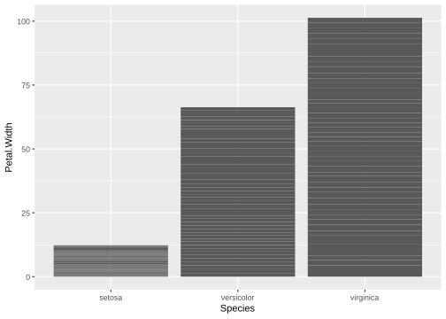
Note There are two types of bar charts: geom_bar() and geom_col(). geom_bar() makes the height of the bar proportional to the number of cases in each group (or if the weight aesthetic is supplied, the sum of the weights). If you want the heights of the bars to represent values in the data, use geom_col() instead. geom_bar() uses stat_count() by default: it counts the number of cases at each x position. geom_col() uses stat_identity() and it leaves the data as is.
Similarly, we can use the gene counts data to make a barplot as well. But first, let’s make the data into the right format so as to make the bar plots. This is where knowledge on tidyverse would be super useful.
se <- function(x) sqrt(var(x)/length(x))
gc_long %>%
group_by(Time) %>%
summarise(mean=mean(log10(count +1)),se=se(log10(count +1))) %>%
head()output
## # A tibble: 4 × 3
## Time mean se
## <fct> <dbl> <dbl>
## 1 t0 0.560 0.00237
## 2 t2 0.605 0.00248
## 3 t6 0.606 0.00247
## 4 t24 0.675 0.00262 Note There are a couple of things to note here. In the above example, we use the pipe %>% symbol that redirects the output of one command as the input to another. Then we group the data by the variable Time, followed by summarizing the count with mean() and sd() functions to get the mean and standard deviation of their respective counts. The head() function just prints the first few lines.
Now that we have summarized the data to be bale to plot the bar graph that we want, we can just input the data to ggplot as well using the %>% sign.
gc_long %>%
group_by(Time) %>%
summarise(mean=mean(log10(count +1)),se=se(log10(count +1))) %>%
ggplot(aes(x=Time, y=mean)) +
geom_bar(stat = "identity")plot
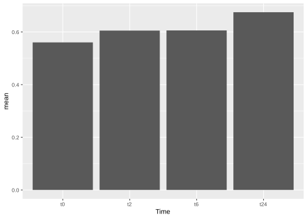
Note Notice that the %>% sign is used in the tidyverse based commands and + is used for all the ggplot based commands.
3.1 Flip coordinates
One can also easily just flip the x and y axis.
gc_long %>%
group_by(Time) %>%
summarise(mean=mean(log10(count +1)),se=se(log10(count +1))) %>%
ggplot(aes(x=Time, y=mean)) +
geom_col() +
coord_flip()plot
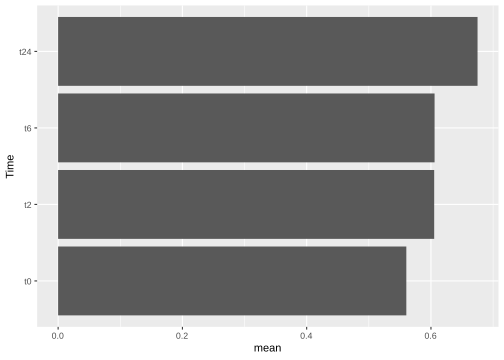
4 Error bars
Now that we have the bar plots, we can also add error bars to them using the sd values we calculated in the previous step.
gc_long %>%
group_by(Time) %>%
summarise(mean=mean(log10(count +1)),se=se(log10(count +1))) %>%
ggplot(aes(x=Time, y=mean, fill = Time)) +
geom_col() +
geom_errorbar(aes(ymax=mean+se,ymin=mean-se),width=0.2)plot
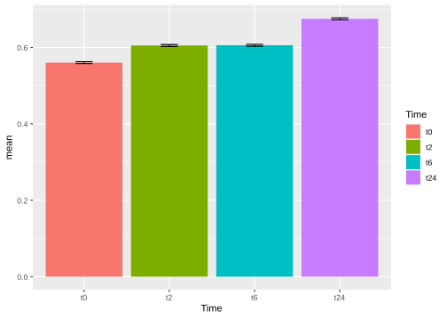
5 Stacked bars
Let’s now try to make stacked bars. For this let’s try to make the data more usable for stacked bars. For this let’s use the group_by function to make the groups based on both Time and Replicate.
se <- function(x) sqrt(var(x)/length(x))
gc_long %>%
group_by(Time, Replicate) %>%
summarise(mean=mean(log10(count +1)),se=se(log10(count +1))) %>%
head()output
## # A tibble: 6 × 4
## # Groups: Time [2]
## Time Replicate mean se
## <fct> <fct> <dbl> <dbl>
## 1 t0 A 0.587 0.00424
## 2 t0 B 0.579 0.00419
## 3 t0 C 0.515 0.00385
## 4 t2 A 0.622 0.00438
## 5 t2 B 0.617 0.00436
## 6 t2 C 0.577 0.00416Let’s build the stacked bars!
gc_long %>%
group_by(Time, Replicate) %>%
summarise(mean=mean(log10(count +1)),se=se(log10(count +1))) %>%
ggplot(aes(x=Time, y=mean, fill = Replicate)) +
geom_col(position = "stack")plot
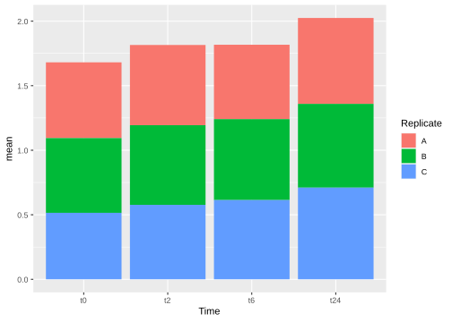
One can also have dodge bars.
gc_long %>%
group_by(Time, Replicate) %>%
summarise(mean=mean(log10(count +1)),se=se(log10(count +1))) %>%
ggplot(aes(x=Time, y=mean, fill = Replicate)) +
geom_col(position = "dodge")plot
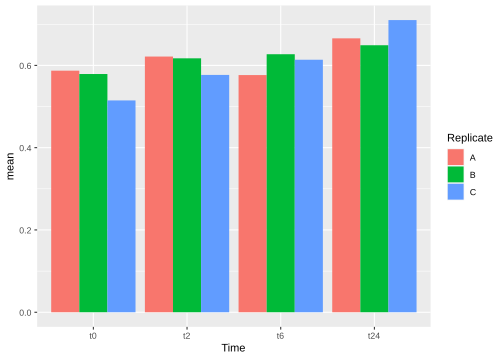
We can try now to plot error bars on them. The errorbars would look weird and complicated if one forgets to add position = dodge to the geom_errorbar() as well.
gc_long %>%
group_by(Time, Replicate) %>%
summarise(mean=mean(log10(count +1)),se=se(log10(count +1))) %>%
ggplot(aes(x= Time, y= mean, fill = Replicate)) +
geom_col(position = "dodge") +
geom_errorbar(aes(ymin=mean-se, ymax=mean+se), position = "dodge")plot
Note It is important that you keep tract of what kind of aesthetics you give when you initialize ggplot() and what you add in the geoms() later.
You can also make these error bars look nicer by playing around with some of the parameters available, like example below:
gc_long %>%
group_by(Time, Replicate) %>%
summarise(mean=mean(log10(count +1)),se=se(log10(count +1))) %>%
ggplot(aes(x= Time, y= mean, fill = Replicate)) +
geom_col(position = position_dodge2()) +
geom_errorbar(aes(ymin=mean-se, ymax=mean+se), position = position_dodge2(.9, padding = .6))plot
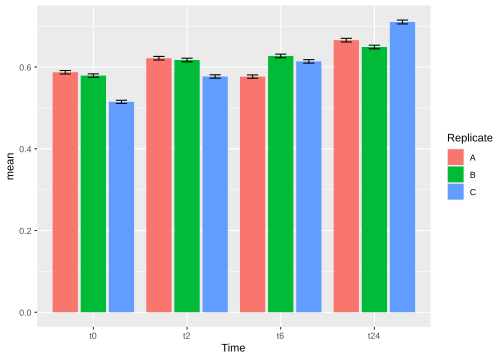
6 Exercise
Task Make the following plots.
Tip It is more of a tidyverse exercise than ggplot. Because to get these plots, you need get the data in the right format.
Task Plot 1:
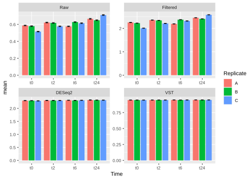
Task Plot 2:

7 Session info
sessionInfo()## R version 4.1.3 (2022-03-10)
## Platform: x86_64-pc-linux-gnu (64-bit)
## Running under: Ubuntu 18.04.6 LTS
##
## Matrix products: default
## BLAS: /usr/lib/x86_64-linux-gnu/openblas/libblas.so.3
## LAPACK: /usr/lib/x86_64-linux-gnu/libopenblasp-r0.2.20.so
##
## locale:
## [1] LC_CTYPE=C.UTF-8 LC_NUMERIC=C LC_TIME=C.UTF-8
## [4] LC_COLLATE=C.UTF-8 LC_MONETARY=C.UTF-8 LC_MESSAGES=C.UTF-8
## [7] LC_PAPER=C.UTF-8 LC_NAME=C LC_ADDRESS=C
## [10] LC_TELEPHONE=C LC_MEASUREMENT=C.UTF-8 LC_IDENTIFICATION=C
##
## attached base packages:
## [1] stats graphics grDevices utils datasets methods base
##
## other attached packages:
## [1] ggrepel_0.9.1 wesanderson_0.3.6 forcats_0.5.1
## [4] stringr_1.4.0 purrr_0.3.4 readr_2.1.2
## [7] tidyr_1.2.0 tibble_3.1.6 tidyverse_1.3.1
## [10] reshape2_1.4.4 ggplot2_3.3.5 formattable_0.2.1
## [13] kableExtra_1.3.4 dplyr_1.0.8 lubridate_1.8.0
## [16] leaflet_2.1.1 yaml_2.3.5 fontawesome_0.2.2.9000
## [19] captioner_2.2.3 bookdown_0.25 knitr_1.38
##
## loaded via a namespace (and not attached):
## [1] httr_1.4.2 sass_0.4.1 jsonlite_1.8.0 viridisLite_0.4.0
## [5] splines_4.1.3 modelr_0.1.8 bslib_0.3.1 assertthat_0.2.1
## [9] highr_0.9 cellranger_1.1.0 pillar_1.7.0 backports_1.4.1
## [13] lattice_0.20-45 glue_1.6.2 digest_0.6.29 rvest_1.0.2
## [17] colorspace_2.0-3 htmltools_0.5.2 Matrix_1.4-0 plyr_1.8.7
## [21] pkgconfig_2.0.3 broom_0.8.0 haven_2.4.3 scales_1.2.0
## [25] webshot_0.5.2 svglite_2.1.0 tzdb_0.3.0 mgcv_1.8-39
## [29] generics_0.1.2 farver_2.1.0 ellipsis_0.3.2 withr_2.5.0
## [33] cli_3.2.0 magrittr_2.0.3 crayon_1.5.1 readxl_1.4.0
## [37] evaluate_0.15 fs_1.5.2 fansi_1.0.3 nlme_3.1-155
## [41] xml2_1.3.3 tools_4.1.3 hms_1.1.1 lifecycle_1.0.1
## [45] reprex_2.0.1 munsell_0.5.0 compiler_4.1.3 jquerylib_0.1.4
## [49] systemfonts_1.0.4 rlang_1.0.2 grid_4.1.3 rstudioapi_0.13
## [53] htmlwidgets_1.5.4 crosstalk_1.2.0 labeling_0.4.2 rmarkdown_2.13
## [57] gtable_0.3.0 DBI_1.1.2 R6_2.5.1 fastmap_1.1.0
## [61] utf8_1.2.2 stringi_1.7.6 Rcpp_1.0.8.3 vctrs_0.4.1
## [65] dbplyr_2.1.1 tidyselect_1.1.2 xfun_0.30